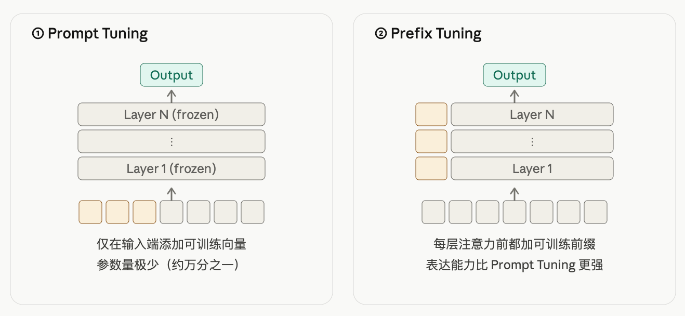
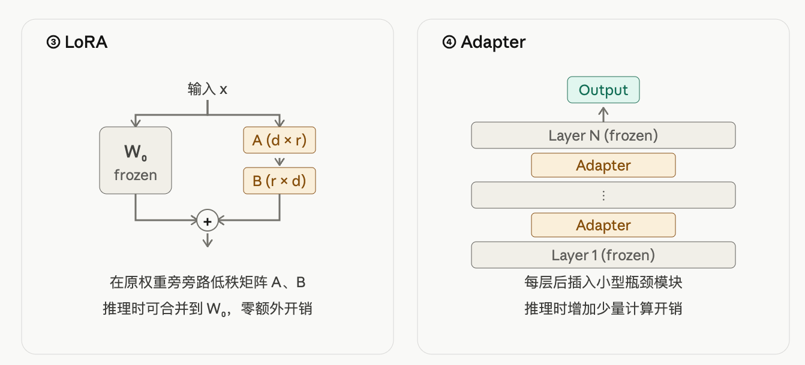
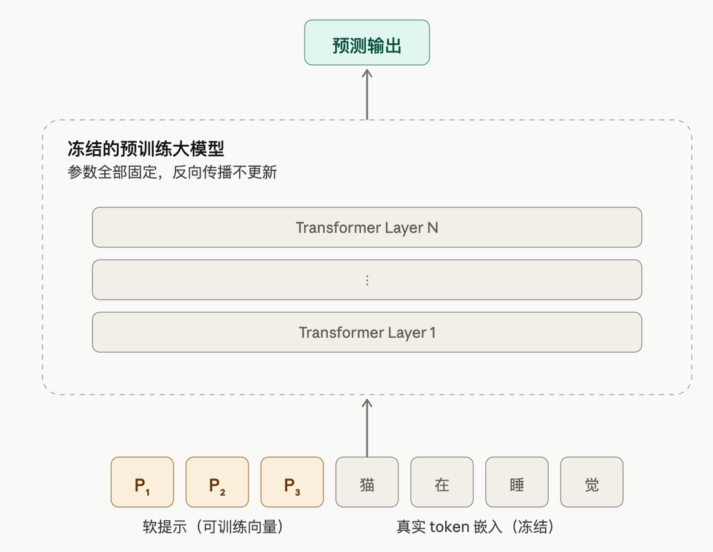
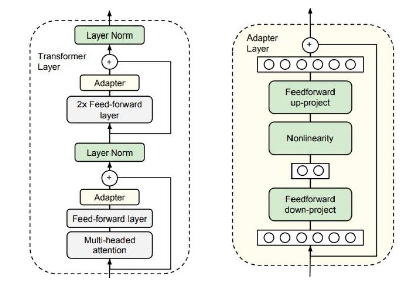

02-监督微调 SFT
TL; DR：预训练 vs SFT → Full SFT处理流程 → PEFT 三大流派 → LoRA → Colab T4 实战
手写还没遇到过，可能我简历没什么SFT🤔感觉不是高频面试点
前言
预训练 Pretrain 训出来的 base model 是"有知识但不会聊天"的状态——给它一句 "你好"，它会按训练分布往下续写 "你好，今天天气不错。我们来聊聊..."，并不理解"用户在和我对话、我应该回答"。要把它变成 ChatGPT / Qwen-Instruct 那种能听指令的助手，下一步靠 SFT (Supervised Fine-Tuning)。
这篇笔记的范围：
- 不展开模型结构和模型训练的通用流程：默认对 Transformer 结构和模型训练（forward / loss / lr / 评估等）已经基本熟悉，想回顾可以看 Transformer 和 预训练 Pretrain 篇
- 不展开并行 / 显存切分等训练策略：SFT 全量微调时的并行设置和 Pretrain 几乎一致，看 分布式训练基础 篇
只关心 SFT 自己特有的事，按数据流向走：
- Full SFT 特殊的数据准备、tokenize 扩展、模型结构修改
- PEFT 微调和 LoRA
- 实战
1. SFT 在训练里的位置
LLM 训练经典三阶段：
flowchart LR
P("Pretrain<br/><br/>1T~15T tokens<br/>next-token<br/>lr ~ 1e-4<br/>训练几个月")
S("⭐ <span style=color:#fff>SFT<br/><br/>1M~10M (prompt, response)<br/>response 监督<br/>lr ~ 1e-5<br/>训练几天 ~ 几周</span>")
R("RLHF / DPO<br/><br/>(prompt, chosen, rejected)<br/>RL / 比较学习<br/>lr ~ 5e-7<br/>训练几天")
P -->|base model| S -->|instruct model| R
style S fill:#3f51b5,stroke:#1a237e,stroke-width:2px,color:#fff
style P fill:#e8eaf6,stroke:#3f51b5,stroke-width:1.5px,color:#1a237e
style R fill:#e8eaf6,stroke:#3f51b5,stroke-width:1.5px,color:#1a237eSFT 是中间层，承上启下：
- 在 base 之上把"会语言"训成"会答题"
- 在 RLHF 之下提供一个能听话的初始模型——直接对未对齐 base 做 RLHF 很难收敛
1.1 SFT 想要的
SFT 不教模型新的世界知识（那是 Pretrain 的事），只教怎么把已有的知识按用户期望的方式表达出来：
| 能力 | 例子 | 数据怎么体现 |
|---|---|---|
| 指令遵从 | 用户说"翻译"就翻译，不会跑偏去续写 | 大量 (instruction, output) 对 |
| 格式输出 | 让你列点就列点、要 JSON 给 JSON、要代码用 markdown | response 中显式包含目标格式 |
| 多轮一致性 | 后一轮能正确引用前一轮内容，"它"指代什么不混 | ShareGPT / WildChat 等多轮对话数据 |
| 拒绝有害请求 | 用户问怎么造毒品，模型礼貌拒绝 | 对齐数据集（HH-RLHF、Constitutional 等） |
| 思维链 CoT | 复杂问题先一步步推理，再给最终答案 | reasoning 数据集（含 Let's think...） |
| 风格 / 语气 | 客服模型的礼貌、专家的严谨、角色扮演的人设 | 风格化 response |
1.2 SFT vs Pretrain 差异
模型结构、loss 函数都一样（自回归 + 交叉熵，参考 预训练 Pretrain §4），区别在数据怎么组织 / loss 算哪一段 / 学习率多大这三点。
[数据格式对比]
Pretrain:
input_ids: [t_0, t_1, t_2, ..., t_n]
labels: [t_0, t_1, t_2, ..., t_n] ← 整段都算 loss
SFT:
input_ids: [<bos>, p_1, ..., p_k, r_1, ..., r_m, <eos>]
└─ prompt ─┘ └─ response ─┘
labels: [-100, -100, ..., -100, r_1, ..., r_m, <eos>] ← 仅 response 算 loss
-100 是 PyTorch CrossEntropyLoss 的默认 ignore_index，标签为 -100 的位置直接跳过不算。
[为什么 prompt 不算 loss]
直觉：模型"读问题"时不需要被惩罚——prompt 是用户给的，不是模型生成的，强迫模型预测 prompt 文本是浪费容量、还会损害模型自由组织答案的能力。SFT 的核心 trick 就是只让模型为自己产出的部分（response）负责。
[为什么学习率差一个量级]
Pretrain 是从随机权重出发，要大 lr 把权重快速推到合理位置。SFT 是在已经训好的权重上小幅调整，lr 太大会灾难性遗忘：模型把预训练学到的世界知识丢了，只剩 SFT 数据里那点东西。所以 SFT 用 1e-5 ~ 5e-5（仍然是 warmup + cosine decay）。
2. Full SFT 处理流程
大厂用开源训自家业务模型的 SFT 阶段基本都是 全量微调 (Full SFT)，也就是更新模型的全部权重。因为算力管够、效果上限最高，资源紧时才退到 PEFT。
这一节参考了最近工作中看到的一些SFT任务，按 Full SFT 自己的处理流程走：
2.1 数据处理: ChatML 模板
[原始数据形态]
最简单的单轮形式：
多轮对话形式（ShareGPT 风格，OpenAI 通用格式）：
{
"conversations": [
{"from": "human", "value": "你好"},
{"from": "gpt", "value": "你好！我可以帮你做什么？"},
{"from": "human", "value": "推荐一本书"},
{"from": "gpt", "value": "推荐《深度学习》..."}
]
}
业界常用 SFT 数据集（SFT 阶段质量比数量重要得多）：
| 数据集 | 规模 | 备注 |
|---|---|---|
| Alpaca / Alpaca-GPT4 | 52K | self-instruct 鼻祖 |
| ShareGPT | ~90K | 用户和 ChatGPT 真实对话 |
| OpenHermes | ~1M | 高质量混合 |
| BAAI Infinity-Instruct | ~9M | 中英文 + 多任务 |
| LIMA | 1K | 实验质量胜过数量的极端例子 |
[ChatML 模板：把对话拼成单条文本]
要让模型理解"谁在说话"，需要在原始对话外面加一层模板。现在主流的是 ChatML（OpenAI 提出，Qwen / 多数开源模型采用）：
<|im_start|>system
You are a helpful assistant.<|im_end|>
<|im_start|>user
什么是大语言模型？<|im_end|>
<|im_start|>assistant
大语言模型 (LLM) 是基于 Transformer 架构的...<|im_end|>
<|im_start|> / <|im_end|> 是预先加进 tokenizer 的特殊 token，每个固定占 1 个 token id，用来明确角色边界——让 attention / loss 能正确 mask、让模型理解 user / assistant / system 的分界。
[业务模型的自定义模板]
ChatML 是通用对话的标准模板，业务上常要在它基础上扩展或替换——§2.2 讲的"自定义 token"是 token 粒度的扩展，这里是整段模板结构的扩展。常见需求：
- System 固定指令：在 system 段塞固定 prefix，锚定身份和风格
- 角色扩展：Agent 引入
<|tool|>/<|critic|>/<|planner|>等新角色，loss 可按角色选择性 mask - 领域 wrapper：代码用
<|code_start|>、多模态用<|vision_start|>、CoT 用<|think|>标推理段
原则：尽量靠 ChatML 改、不要完全自创——base 已经见过 ChatML、下游推理框架（vLLM、HF apply_chat_template）开箱即用；自创格式会让 SFT 收敛慢、推理侧也得手写适配。
工程上一般训练框架（如 veomni等）都会开放tokenize模板自定义入口，按规定的接口改就行。
2.2 Tokenizer 扩展
预训练 tokenizer 面向纯文本，词表里没有 <|im_start|> / <|im_end|>、没有"角色"概念。SFT 阶段往 tokenizer 里加新的特殊 token，分两类。
[ChatML 标准类]
通用对话所必需的：
- 角色边界：
<|im_start|>/<|im_end|>/<|user|>/<|assistant|>/<|system|> - 工具调用：
<tool_call>/</tool_call>/<tool_response>等
[业务自定义类（extend）]
按下游场景额外加的 token，常见的几种：
| 场景 | 自定义 token 例子 | 用途 |
|---|---|---|
| 客服 / 业务 | <|product_id|>、<|order_id|> |
placeholder 一致替换、防止裂解 |
| 多模态边界 | <|image_pad|> / <|vision_start|> |
标记非文本模态的占位区 |
| Agent / 工具 | <|tool_start|> / <|action|> |
让模型一致地输出结构化动作 |
[为什么必须是单个 token]
如果让 tokenizer 把 <|im_start|> 拆成多个subword，模型每次要"组装"一个边界标记，attention mask 也无法精确对齐到边界。所以这些都要作为 single special token 加进去。
[工程实现]
tokenizer.add_special_tokens({
"additional_special_tokens": [
"<|im_start|>", "<|im_end|>", # ChatML 标准
"<|product_id|>", "<|order_id|>", # 业务自定义
]
})
# 词表大小从 V 涨到 V + k
加完之后还要让模型端跟上——这是下一步要处理的事。
2.3 模型结构适配
tokenizer 加了新 token 后，模型端要相应处理。最直接受影响的是 embedding 矩阵和 lm_head——它们都是按"词表大小 × hidden_layer" 形状存的。
[基础场景：开源 base + ChatML resize]
model.resize_token_embeddings(len(tokenizer))
# embedding / lm_head 形状 [V, d] → [V+k, d]
# 新行用现有 embedding 的均值初始化（peft / hf 默认）
# SFT loss 把这些新 token 学到合理的语义位置
现代发布的 base model（Qwen2.5-Base、Llama-3-Base 等）通常已经在预训练阶段就预留好 ChatML 特殊 token 的位置，SFT 时不用 resize——这是最省事的做法。只有用更老的 base（GPT-2 类）或者业务想加自定义 token 时，才需要扩词表 + resize。
[进阶场景：业务自定义结构]
业务方未必直接拿最基础的开源 base 做 SFT，有时候也会修改结构，比如先在开源模型上做结构化剪枝 + 恢复训练，或者通过其他改造得到一个定制基座，再用这个去 SFT。
预训练框架（Megatron / NeMo / veomni 等）一般都用 config 文件描述实际结构（layer 数、hidden dim、head 数等），不一定是标准开源值。SFT 流程从 config 读模型实际形状即可：
resize_token_embeddings走的是 model 实际形状（hf 默认行为），自动对齐到改造后的维度；不要硬编码标准 transformer 的 d- 新 token 行的初始化均值是基于当前的 V 行（已经反映改造后的语义），不要从原始开源模型里拷贝高维向量再截断（语义会错）
2.4 full SFT训练
数据 / token / 模型都准备好之后，SFT 训练的 forward / loss / optimizer 流程和 Pretrain 几乎一样——区别只在两件事：labels mask 怎么算、要不要冻结部分参数省显存。
[labels mask（核心）]
把 ChatML 文本走一遍 tokenizer 得到 input_ids，再构造 labels。关键：response 起点之前的全部置 -100：
拼完的文本:
<|im_start|>user\n什么是 LLM？<|im_end|>\n<|im_start|>assistant\nLLM 是...<|im_end|>
│ tokenize
▼
input_ids: [im_start, user, \n, "什", "么", "是", " LLM", "?", im_end, \n,
im_start, assistant, \n, "LLM", " 是", "...", im_end]
│ 构造 labels
▼
labels: [-100, -100, -100, -100, -100, -100, -100, -100, -100, -100,
-100, -100, -100,
↑─────── 整个 prompt + ChatML 控制 token 都不算 ───────↑
"LLM", " 是", "...", im_end]
↑──────── 只有 assistant 的回答参与 loss ────────↑
实现：trl 提供 DataCollatorForCompletionOnlyLM，给它 response_template = "<|im_start|>assistant\n"，它会自动定位 response 起点、把前面所有 labels 设为 -100。
collator 就是 dataloader 里把多条样本组装成一个 batch 的小工具——负责 padding、生成 attention_mask、构造 labels 等。SFT collator 多了一步：按模板找 response 起点、把前面 mask 成 -100。
[多轮对话：每轮 assistant 都参与 loss]
input_ids: <im_start>user "你好" <im_end> <im_start>assistant "你好！" <im_end>
<im_start>user "推荐一本书" <im_end> <im_start>assistant "推荐《...》" <im_end>
labels: -100 ...prompt 1... "你好！" <im_end>
-100 ...prompt 2... "推荐《...》" <im_end>
↑ user / 控制 token 都 mask ↑ 每段 assistant 都参与 loss
trl 的 collator 支持双模板（instruction_template + response_template），自动按 user/assistant 对扫描整条序列做 mask。
[自定义模板 → 自定义 mask]
如果 §2.1 / §2.2 里加了业务自己的角色或 token，labels mask 也要跟着扩展。比如 Agent 模型加了 <|tool|> 和 <|critic|> 角色后，常见 mask 规则：
<|tool|>段是工具的真实输出、不是模型生成的，要全部 mask 成 -100（同 user）<|critic|>段如果是另一个模型给的反馈，也 mask- 只让 assistant 段（外加
<|action|>/<|think|>这些模型自己产出的）参与 loss
trl 的双模板 collator 不够用时，业务通常自己写衍生的 collator——按角色 token 分段扫描，按角色配置查 mask 规则。
[冻结部分参数：Full SFT 的简化变体]
Full SFT 还有一种常见的简化变体——只训部分层 / 部分参数，剩余冻结。比起更新全部参数省显存，但本质上仍然在原参数空间里改：
- 冻结浅层 / 只训高层：浅层学的是通用语言特征（语法、tokenization 行为），高层学任务相关行为。SFT 主要想改高层，浅层冻住能省一半显存
- 只训特定模块：比如只训 lm_head（极端，只能学输出风格）、只训 FFN（FFN 是参数大头，但不动 attn 会限制能力）
实现极简——遍历 model.named_parameters()，对要冻的模块设 requires_grad = False 就行，不需要任何额外 PEFT 库。
显存收益比 PEFT 弱——梯度和 optimizer state 还是按"未冻结部分的参数量"算，且模型 weight 要全量加载。但实现成本极低、不引入新模块，是 Full SFT 显存吃紧时的常用补丁。
[一个具体例子：Qwen-VL 系 SFT 的多阶段冻结]
VLM 的训练通常分多阶段，每阶段冻什么不一样——这是工业级"冻结部分参数"的典型样板：
| 阶段 | 冻结 | 训练 | 目的 |
|---|---|---|---|
| Stage 1 (alignment) | LLM + ViT | projector | 学视觉到语言空间的对齐 |
| Stage 2 (vision SFT) | LLM | ViT + projector | 适配领域图像 |
| Stage 3 (full SFT) | 不冻 | 全部 | 端到端联合微调 |
3. 从全量到 PEFT
3.1 全量 SFT 的资源压力
显存账（参考 分布式训练基础）：
| 项目 | 含义 | 7B 模型 占显存（混合精度） |
|---|---|---|
| Model weight | 参数本身 | 14 GB（bf16） |
| Gradient | 每个参数的梯度 | 14 GB（bf16） |
| Optimizer state | AdamW 的 m, v (fp32) | 56 GB（每参数 8 byte） |
| Activation | forward 中间值 | 几 GB ~ 十几 GB |
| 合计 | ~100 GB（单卡 A100 80G 装不下） |
7B 单卡爆、70B 要 ~1 TB 显存 + ZeRO-3。SFT 数据量小、计算时间不算瓶颈，显存才是——这就是 PEFT 的根本动机：不是为了快，是为了在小卡上跑得动。
3.2 PEFT 的核心思想
[什么是"低秩"]
矩阵的"秩 (rank)"是它包含的独立信息维度。一个 \(d \times d\) 的矩阵理论上有 \(d^2\) 个自由参数，但如果它的秩只有 \(r\)（\(r \ll d\)），那它实际上可以分解成两个细矩阵的乘积：

\(\Delta W\) 是低秩的"就是说：微调带来的权重改动虽然形状是 \(d \times d\)，但实际只有 \(r\) 维有效自由度，可以用两个细矩阵表示。
[LoRA 的关键观察]
微调时 \(\Delta W = W_{\text{finetuned}} - W_{\text{pretrained}}\) 的奇异值衰减很快——也就是说 \(\Delta W\) 是低秩的。
直觉：Pretrain 已经把"会语言、有世界知识"这件大事做完了；SFT 只是叠加一个"按格式回答"的行为约束，这个约束在数学上表现为低秩 \(\Delta W\)。
如果 \(\Delta W\) 真的低秩，那直接训整个 \(W\) 就是浪费。Parameter-Efficient Fine-Tuning (PEFT) 的统一思想就是：冻结绝大多数预训练参数，只训少量新增或少量选定的参数，达到与全量相当的效果。
3.3 PEFT 三大流派
按"在哪里加少量参数"，PEFT 分三个流派——Prompt / Adapter / LoRA。
各家都是 冻结主模型 + 只训少量参数，差别在新参数加在哪、是什么形式、推理时有无开销：


下面 3.4 / 3.5 简单过一下 Prompt 和 Adapter，LoRA 单独放 §4 展开。
3.4 Prompt 类：输入侧软提示
把原 Transformer 完全冻结，只在输入侧（或每层 attention 的 K/V）注入一段可训练的 virtual token——不对应任何真实词汇，是直接学出来的连续向量（"soft" prompt）。代表方法：
| 方法 | 加在哪 | 备注 |
|---|---|---|
| Soft Prompt | 输入层 | 拼一段可训练 embedding 到序列前 |
| Prefix Tuning | 每层 attn 的 K/V | 表达力比 Soft 强 |
| P-Tuning V1 / V2 | V1 输入层 / V2 每层 | 早期工作 |

新增参数 0.01% ~ 3%、实现极简。但小模型效果差（10B 以下基本不如全量），且推理时序列变长更慢——工业上基本被 LoRA 取代，主要在 100B+ 大模型 + 极致省显存场景偶尔出现。
3.5 Adapter 类：block 内插小模块
《Parameter-Efficient Transfer Learning for NLP》Houlsby et al. 2019 [link]
每个 Transformer block 内插入两个 Adapter——attention 之后一个、FFN 之后一个，主模型冻结，只训 Adapter。新增参数 0.5% ~ 8%。Adapter 内部是带残差的瓶颈 MLP：

致命缺点：每个 block 多两次小矩阵乘 + 中间非线性 → 无法吸收进原权重，推理永久多开销。这是它后来被 LoRA 取代的根本原因。
4. LoRA：资源紧时的首选
《LoRA: Low-Rank Adaptation of Large Language Models》Microsoft 2021 [link]
LoRA 不是工业级 SFT 的首选——大厂训自家 instruct 模型用的还是 Full SFT。LoRA 真正的舞台是资源受限的 SFT 场景。
我问朋友说，还以为lora用的挺多的。楼上做预训练同学答：大多是穷学生用的ovo
但因为这类用户基数大、生态成熟，LoRA 也算是 PEFT 里被讨论最多的，在面试里也是小重点。
4.1 模块结构
LoRA 模块本身就是 两个连续的 Linear 层（中间没有非线性激活）：

参数：
- \(A \in \mathbb{R}^{r \times d_{\text{in}}}\)：初始化用高斯分布
- \(B \in \mathbb{R}^{d_{\text{out}} \times r}\)：初始化为全 0
- 串起来 \(BA \in \mathbb{R}^{d_{\text{out}} \times d_{\text{in}}}\)，等价于一个新的 Linear 层
LoRA 故意不加中间非线性——BA 在数学上就是一个矩阵，可以合并回原 W（这是 LoRA 干掉 Adapter / Prefix 的关键）。
LoRA 不替换原 Linear、也不串联，而是并联——一条 W₀ 主路 + 一条 BA 修正路，两路相加。单层计算公式：
其中 \(\Delta W = \frac{\alpha}{r} BA\) 就是 LoRA 学到的"权重残差"。
由于 \(B\) 初始化为 0，训练第 0 步 \(\Delta W = 0\)，模型行为和原 base 完全一致；之后 \(B\) 通过反向传播更新，逐步学到 task-specific 修正。
部署时把两路合并：
纯加法、\(W'\) 形状和 \(W_0\) 完全一样，推理流程和原模型也一样：
合完后可以直接用 vLLM / TGI / llama.cpp 部署，零额外推理开销。
多 LoRA 同时挂载：合并的线性叠加性允许同时挂载多个 LoRA：\(W' = W_0 + \sum_i \frac{\alpha_i}{r_i} B_i A_i\)。一份基座 + N 个 LoRA 同时服务，是当前多任务 LLM serving 的主流方案。
4.2 设计细节
[初始化：A 高斯、B 零]
A 高斯随机、B 全零的组合是为了让第 0 步 \(\Delta W = 0\)，模型从预训练权重平滑出发。其他组合都不行：
| 初始化 | 问题 |
|---|---|
| 双零 | 对称失效，梯度无法打破对称 |
| 双高斯 | 第 0 步 ΔW 是非零随机扰动，等于一开始就破坏预训练权重 |
| A=0, B=高斯 | 数学等价但实验效果差（前向梯度流不对称影响优化轨迹） |
详见 The Impact of Initialization on LoRA Finetuning Dynamics [link]
[r 和 α：表达力 vs 力度]
- r（rank）：A 和 B 中间的瓶颈维度，决定旁路的表达自由度。r 越大表达能力越强，但参数量 / 显存也跟着大
- α（alpha）：缩放因子，控制旁路在最终输出里的力度。α 越大修正越激进
| 任务难度 | r 推荐 |
|---|---|
| 简单（领域适配 / 格式调整） | 4 |
| 普通（通用 SFT） | 8 |
| 难（多语言 / 长 context / 数学推理） | 16~32 |
为什么两个超参共存：保持 \(\alpha/r\) 不变（α 跟着 r 翻倍）→ 旁路作用力不变 → r 改变时 lr 不需要重调。工程惯例 \(\alpha = 2r\)（r=8 → α=16）。先固定 α/r=2，调 lr；效果不行再动 α/r 比值。
[改哪些层：Q / K / V / O 怎么选]
LoRA 论文 Table 5 在 GPT-3 175B 上做了消融实验（同样的可训练参数预算下比较）：
| target_modules | r | 结论 |
|---|---|---|
| 单 \(W_q\) 或单 \(W_k\) | 8 | 较差，K 单独尤其差 |
| \(W_q\) + \(W_v\) | 4 | 接近全配置 |
| \(W_q\) + \(W_k\) + \(W_v\) + \(W_o\) | 2 | 最优，但和 q+v 几乎打平 |
两个关键结论：
- 种类比秩重要：与其调大 r，不如把预算分给更多种类的矩阵（q+v r=4 ≈ qkvo r=2）
- K 单独最差：单独训 W_k 收益最小，推荐组合至少包含 W_v
不同场景的工程惯例：
| 场景 | target_modules | 说明 |
|---|---|---|
| 资源紧（论文） | ["q_proj", "v_proj"] |
最经典配置，参数最少 |
| attention 全开 | ["q_proj", "k_proj", "v_proj", "o_proj"] |
attn 4 个 Linear 都加，比 q+v 稳一点 |
| 资源够 | "all-linear" |
attn 4 + FFN 3 = 7 个 Linear。FFN 占 block 参数 2/3，加上效果普遍更好 |
别加 LayerNorm / Embedding / lm_head——LoRA 设计就是给 Linear 用的；Embedding 太大、lm_head 直接出概率分布会改变模型输出行为。
[基座 + adapter 分离存储]
LoRA 训完后基座 \(W_0\) 和增量 \((A, B)\) 分开保存——这是多任务部署最大的工程便利。Llama-7B + r=8, q+v 的体量：
| 存的什么 | 大小 |
|---|---|
| 全量 SFT 后的模型 | 14 GB（bf16） |
| LoRA adapter | ~8 MB（4.2M 参数） |
| 基座 W₀（共享） | 14 GB（一次就好） |
N 个下游任务只需 1 份基座 + N 份小 adapter，存储成本下降两个数量级。
4.3 显存收益
LoRA 的杀手锏不是 forward 算量节省，而是反向 + 优化器状态的显存大幅下降——原 \(W_0\) 完全冻结，只有 A 和 B 需要梯度和 Adam 状态。这就是单卡 24 GB 也能跑 7B LoRA 的原因。
| 项目 | 全量 SFT (7B) | LoRA q+v (4.2M trainable) |
|---|---|---|
| Model weight | 14 GB（bf16） | 14 GB（bf16，全冻结） |
| Gradient | 14 GB | ~0.008 GB |
| Adam m + v (fp32) | 56 GB | ~0.034 GB |
| 额外训练开销 | 70 GB | ~0.04 GB |
forward 算量近似不变——加在 Q/K/V 三个矩阵、r=8, E=4096 时 LoRA 多算的部分相对原 forward < 0.4%，可忽略。
5. 实战：mini LoRA SFT
参考知乎 《深入浅出 LoRA》 第四节的 peft 微调流程，针对 Colab T4 GPU 整理成可直接跑的版本。完整 ipynb 见 05_mini_lora_sft.ipynb ｜ Colab（T4 实测 ~3.5 min 跑通）
5.1 扩词表 + 适配结构
模型：Qwen2.5-0.5B——T4 16GB 装得下、ChatML 特殊 token 预训练就预留好了。
import torch
from transformers import AutoTokenizer, AutoModelForCausalLM
MODEL_PATH = "Qwen/Qwen2.5-0.5B"
tokenizer = AutoTokenizer.from_pretrained(MODEL_PATH, trust_remote_code=True)
# T4 不支持 bf16 必须 fp16; attn 走 eager (HF 默认实现, 见下方说明)
model = AutoModelForCausalLM.from_pretrained(
MODEL_PATH,
torch_dtype=torch.float16,
attn_implementation="eager",
device_map="auto",
)
attn_implementation三个选项： -"eager"：PyTorch 原生Q@K^T → softmax → @V，最朴素最慢但任何 GPU 都能跑 -"sdpa"：PyTorch 2.0+scaled_dot_product_attention，会自动选 backend；Ampere+ 上等价 FlashAttn -"flash_attention_2"：显式调 FlashAttn2 库，需要 Ampere+ (sm_80+) GPU，T4 (sm_75) 用不了T4 上保险起见用
eager。
词表扩展 + reshape：
Qwen 的 ChatML 系列 token (<|im_start|> / <|im_end|> 等) 在预训练就预留好了，直接用就行；但业务往往要加自定义 token（§2.2 的 <|product_id|> 等），或者用的 base 没预留 ChatML 时也得手动加——两种情况都走同一套 add_special_tokens + resize_token_embeddings：
extra_tokens = [
"<|product_id|>", "<|order_id|>", # 业务自定义
# "<|im_start|>", "<|im_end|>", # 如果 base 没预留 ChatML, 也加这里
]
n_added = tokenizer.add_special_tokens({"additional_special_tokens": extra_tokens})
print(f"加了 {n_added} 个新 token, 词表 V → V+{n_added}")
# n_added 为 0 时 resize 是 no-op；但显式判断更清晰
if n_added > 0:
# embedding / lm_head [V, d] → [V+k, d], 新行用现有 embedding 均值初始化
model.resize_token_embeddings(len(tokenizer))
训练前置三件套：
model.gradient_checkpointing_enable() # 省显存: 不存中间激活, backward 时重算
model.enable_input_require_grads() # 让 embedding 输出 require_grad, 否则 LoRA 收不到梯度
model.config.use_cache = False # 训练时关 KV cache (和 checkpoint 冲突, 推理前改回 True)
这三行常被一起开。
enable_input_require_grads是 PEFT + checkpoint 组合的关键——LoRA 把原 weight 全冻了 (requires_grad=False)，如果输入 embedding 的输出也不require_grad，backward 链上没有任何带梯度的张量，PyTorch 会跳过整个 graph，LoRA 参数收不到梯度、loss 不降。
5.2 LoRA 配置
from peft import get_peft_model, LoraConfig, TaskType
peft_config = LoraConfig(
task_type=TaskType.CAUSAL_LM,
inference_mode=False,
r=8,
lora_alpha=16, # α = 2r 工程惯例
lora_dropout=0.1,
target_modules=["q_proj", "v_proj"], # T4 资源紧；够就 "all-linear"
)
model = get_peft_model(model, peft_config)
model.print_trainable_parameters()
# trainable params: ~1M, all params: ~500M, trainable%: ~0.2%
5.3 数据 + 自定义 collator
模拟小数据集 + 手写 response-only mask collator（§2.4 的 mask 规则）：
from datasets import Dataset
raw = [
{"question": "什么是 LLM？", "answer": "LLM 是基于 Transformer 的大语言模型..."},
{"question": "1+1=?", "answer": "1+1=2"},
# 实际业务从 jsonl 加载
]
dataset = Dataset.from_list(raw).map(lambda e: {
"text": (f"<|im_start|>user\n{e['question']}<|im_end|>\n"
f"<|im_start|>assistant\n{e['answer']}<|im_end|>")
})
ASSIST_START = "<|im_start|>assistant\n"
assist_ids = tokenizer.encode(ASSIST_START, add_special_tokens=False)
def collator(batch, max_len=512):
enc = tokenizer([b["text"] for b in batch],
padding=True, truncation=True, max_length=max_len,
return_tensors="pt")
labels = enc["input_ids"].clone()
for i, ids in enumerate(enc["input_ids"]):
# 找 "assistant\n" 起点；之前全部 mask 成 -100
for j in range(len(ids) - len(assist_ids) + 1):
if ids[j:j+len(assist_ids)].tolist() == assist_ids:
labels[i, :j+len(assist_ids)] = -100
break
labels[i, enc["attention_mask"][i] == 0] = -100 # padding 也 mask
return {**enc, "labels": labels}
5.4 训练
from transformers import Trainer, TrainingArguments
training_args = TrainingArguments(
output_dir="./out",
learning_rate=1e-5, # §1.2 lr 区间
warmup_ratio=0.03,
lr_scheduler_type="cosine",
num_train_epochs=3,
per_device_train_batch_size=2, # T4 16GB, 0.5B + LoRA 大概 2~4
gradient_accumulation_steps=8, # 等效 batch=16
fp16=True, # T4 必须 fp16, 不是 bf16
max_grad_norm=1.0, # fp16 防爆
logging_steps=5,
save_steps=50,
report_to="none",
remove_unused_columns=False, # 必须关, 否则 Trainer 会删掉 collator 要用的 "text" 列
)
trainer = Trainer(
model=model,
train_dataset=dataset,
args=training_args,
data_collator=collator,
)
trainer.train()
trainer.save_model("./out/adapter") # 只存 LoRA，几 MB
5.5 训完合并 + 推理
部署时合回基座（合并公式 §4.1）：
from peft import PeftModel
base = AutoModelForCausalLM.from_pretrained(MODEL_PATH, torch_dtype=torch.float16)
base.resize_token_embeddings(len(tokenizer)) # 基座也要 resize 到扩展后的 V+k
model = PeftModel.from_pretrained(base, "./out/adapter")
model = model.merge_and_unload() # W' = W₀ + (α/r)·BA
model.save_pretrained("./out/merged")
tokenizer.save_pretrained("./out/merged")
合完后是普通 HF 模型，推理 0 额外开销。